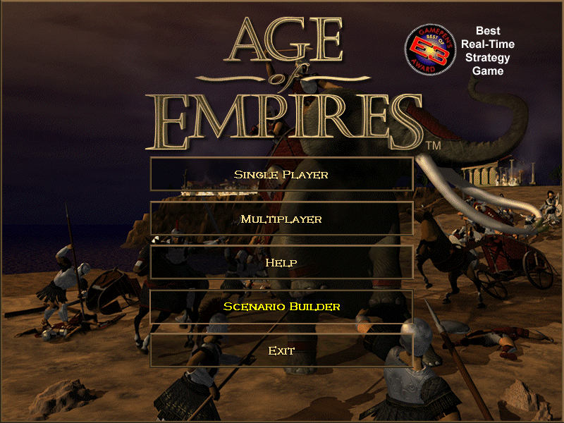

Demoverzia je skúšobná verzia programu alebo počítačovej hry. Používa sa hlavne na prezentáciu programu pred jeho zakúpením. Používateľ si môže softvér vyskúšať a zistiť, či mu vyhovuje.
Demoverzie bývajú často časovo obmedzené, napríklad na 7 alebo 30 dní. Niektoré programy majú zablokované určité funkcie alebo obsahujú iba časť obsahu.
Tento typ softvéru sa používa hlavne pri hrách, grafických editoroch alebo kancelárskych programoch. Vývojári pomocou demoverzií propagujú svoje produkty a snažia sa získať nových zákazníkov.
Príkladom demoverzie môže byť skúšobná verzia Microsoft Office alebo demo počítačových hier.
